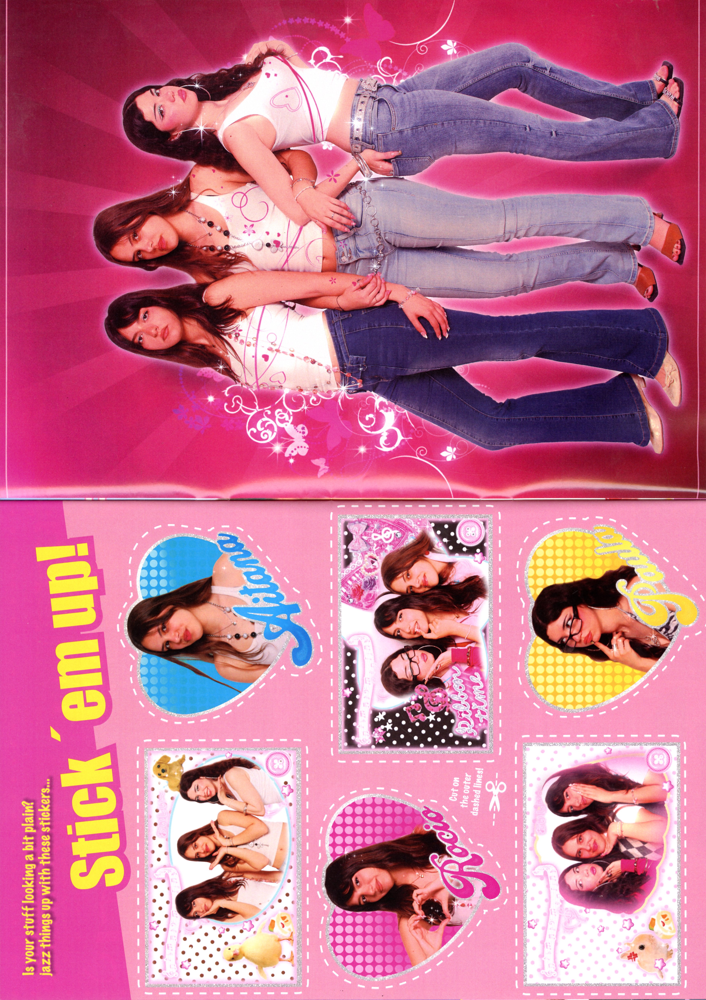
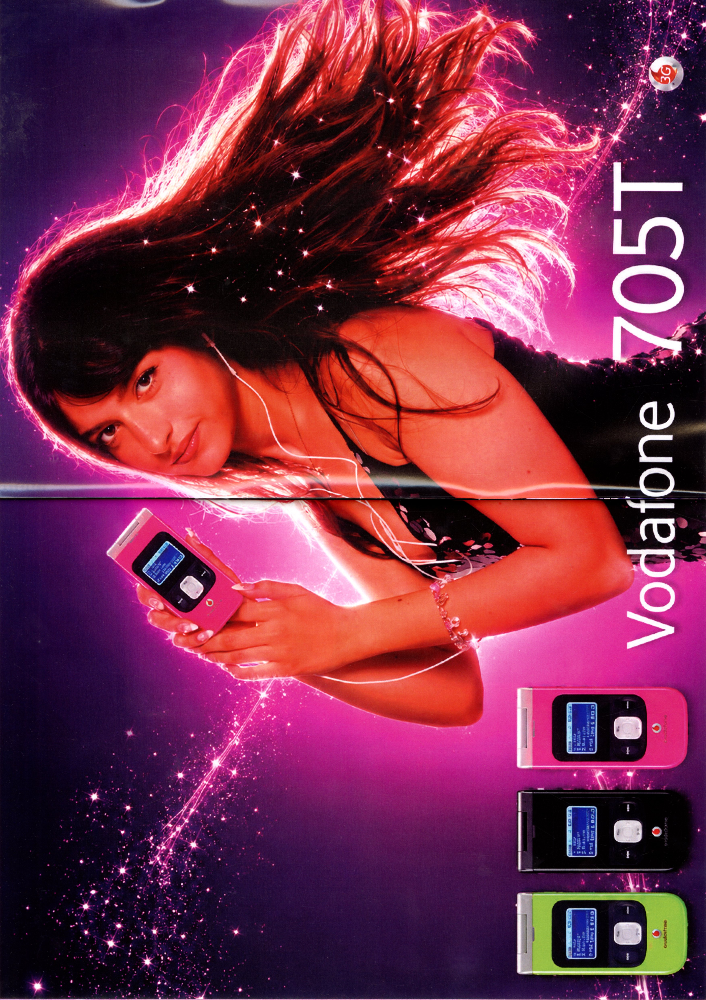
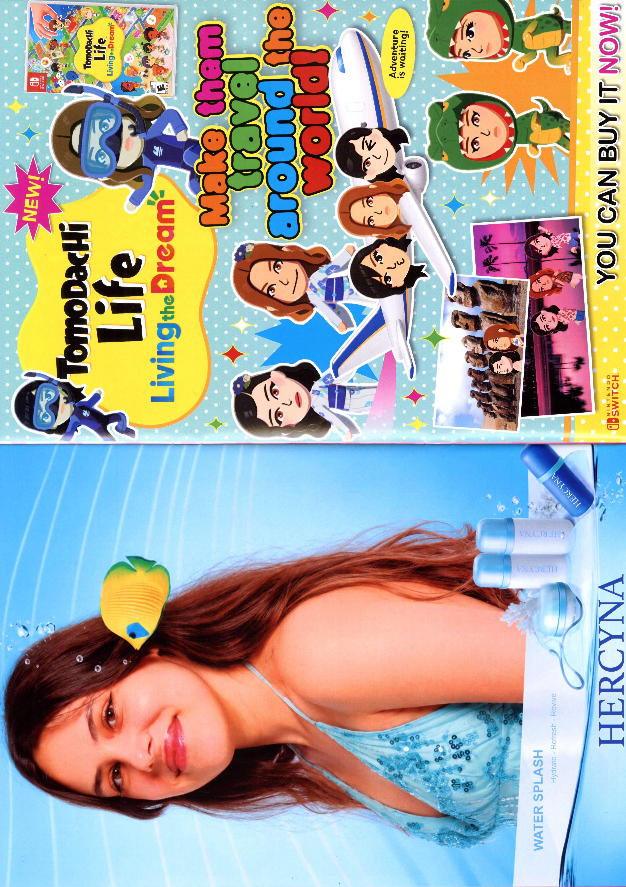
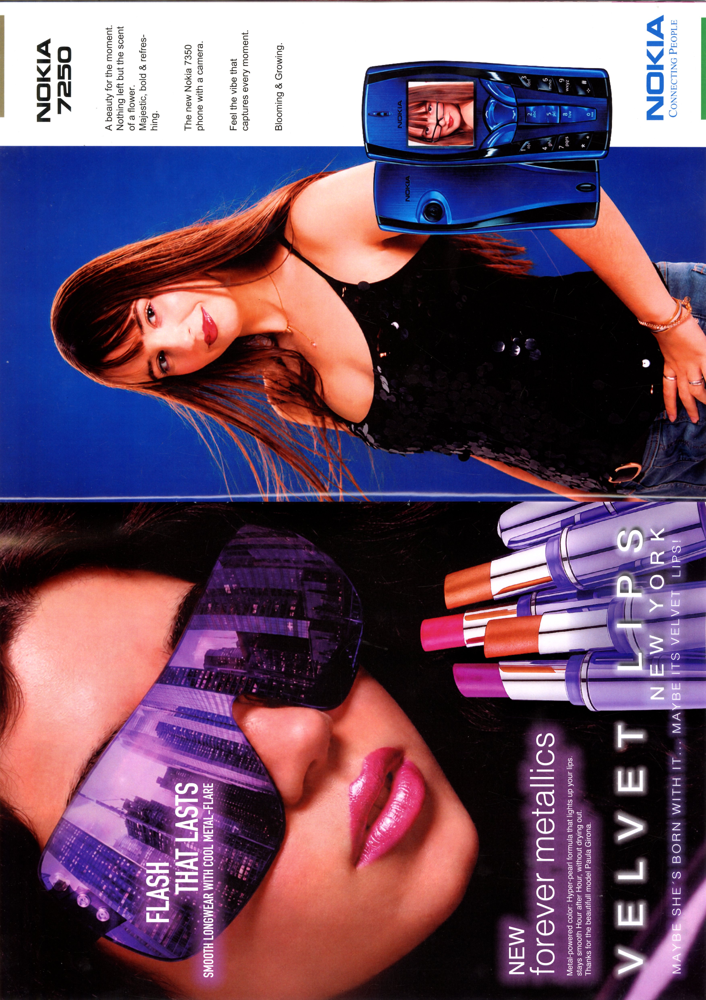
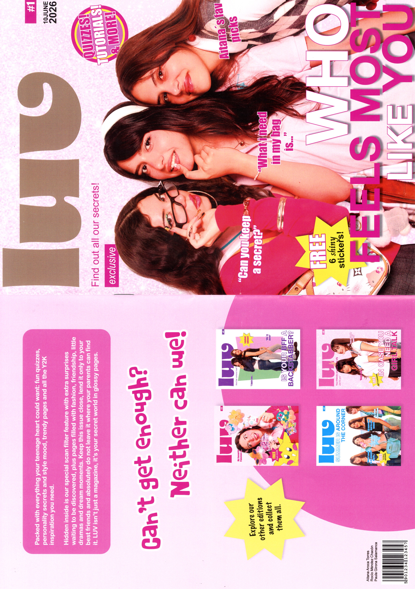

LUV
2026
Editorial & Art Direction
Editorial Design / Photography / Styling / Art Direction
An editorial magazine project inspired by 2000s pop culture and teen
glossies.
Role: Creative Director & Editorial Designer.
OVERVIEW
LUV is an editorial magazine inspired by the bold, playful and chaotic aesthetic of early 2000s teen magazines. I brought together photography, art direction and graphic design to create a publication that celebrates the visual excess and personality of Y2K culture.
THE IDEA
I wanted to capture the energy of early 2000s magazines, where clashing colours, experimental typography, overlapping elements and unexpected compositions were part of the visual language.
Rather than following traditional editorial rules, I embraced maximalism, experimenting with combinations of colours, textures and layouts I had never considered before. The challenge was to make something deliberately chaotic while keeping every creative decision intentional.
BRINGING THE CONCEPT TO LIFE
I took part in every stage of the creative process, from planning and organising the photoshoot to working with the camera and lighting in the studio. I then edited the photographs and designed the entire magazine in InDesign.
One of the most interesting challenges was finding the balance between experimentation and composition. I played with unconventional typography, layered images and contrasting visual elements, making sure the magazine felt spontaneous and expressive without losing its overall identity.
FINAL RESULT
The final result is a fully printed magazine that brings the playful spirit of Y2K editorial design into a contemporary creative project.
What I enjoyed most was having creative control over the entire process, from the initial concept and photography to the final printed pages. Seeing all these disciplines come together into one physical publication was especially rewarding.
LUV represents the kind of creative work I enjoy most: experimental, expressive and full of personality, where photography and graphic design work together to create a complete visual experience.






